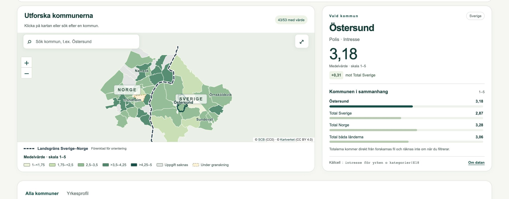
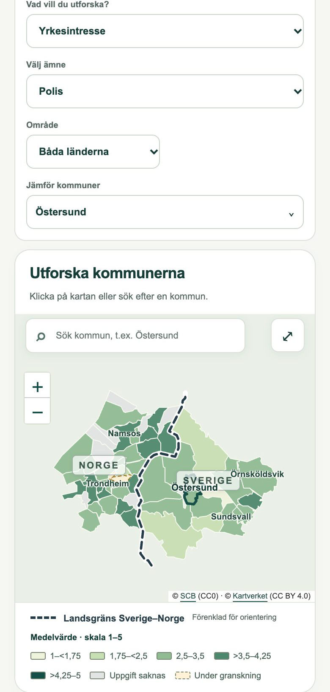

Data and GIS
Bilingual survey map
A map and data tool that presents a cross-border youth survey for 51 municipalities, in Swedish and Norwegian.
- When
- Aug – Oct 2026
- Status
- Working version delivered for the research team’s review
- Source
- Private source; live site belongs to the project
- Stack
Problem and idea
A research team had its survey results in one large workbook: 162 measures across five themes, broken down by municipality, gender and group, for municipalities on both sides of a national border. They wanted people outside the team to explore the results on a map, in both languages, without a server to run and without any risk of the numbers drifting from the source.
The idea: convert the workbook once through a checked Python pipeline, publish the result as a small static site, and test every measure in a real browser before and after each release.
How it works
- WorkbookFive sheets from the researchers
- Python importSchema checks, documented corrections, geodata preparation
- Static bundleJSON, GeoJSON and Leaflet, 0.84 MB, no server
- Release gateE2E and accessibility tests must pass
- Live checkThe same tests rerun on the published site
Demo


The live site belongs to the research project, so it is not linked here. I can walk through it on request.
What I built
- The Python import that reads the workbook, validates it against a schema, applies the researchers’ documented corrections and prepares the geography.
- The map, table, occupational profile and multi-municipality comparison, with shareable links that keep every selection.
- Swedish and Norwegian text throughout, keyboard support and a phone layout.
- The release workflow: tests before publishing, then the same tests against the live address, plus a manifest of file hashes.
- Rounds of feedback and accessibility review with the researchers.
Stack
Quality evidence
- All 8,262 municipal source cells, 486 totals and 450 standard deviations reconciled against the original workbook with an independent reader.
- 12 unit test groups and 16 browser E2E groups, covering every measure on the map and in the table.
- Automated WCAG A/AA checks with axe, keyboard and focus tests, and layouts at 320, 390, 1280 and 1366 px.
- Each release records the exact version and a hash for every published file.
Current limits
- Some municipal values are withheld until the researchers confirm them.
- Part of the Norwegian data and metadata is waiting for the researchers’ final confirmation.
- The cohort study data has not been delivered yet, so that view is empty.
- A manual screen-reader review and a formal accessibility statement are still to do.